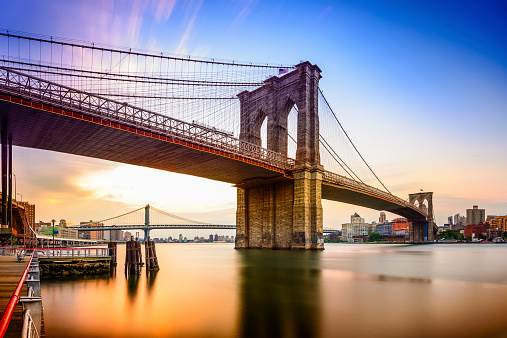

Brooklyn Bridge
The Brooklyn Bridge connects the boroughs of Manhattan and Brooklyn by spanning the East River. It is one of the oldest suspension bridges in the United States and was completed in 1883.

Brooklyn Bridge
Grand Central Station
The Brooklyn Bridge connects the boroughs of Manhattan
>The Brooklyn Bridge connects the boroughs of Manhattan and Brooklyn by spanning the East River. It is one of the oldest suspension bridges in the United States and was completed in 1883.
>